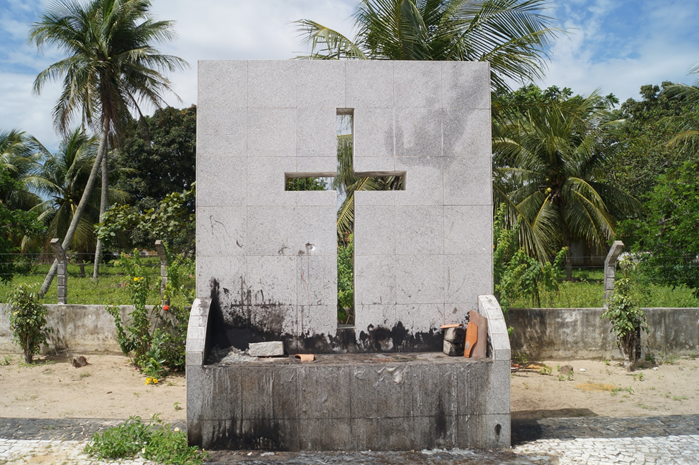
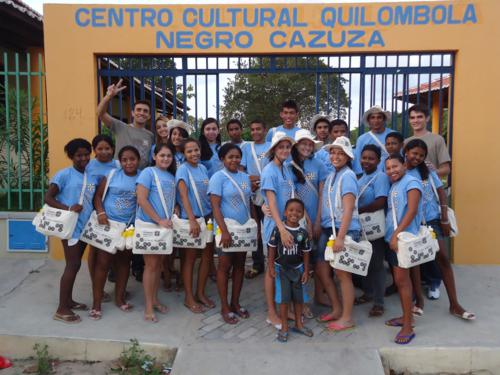
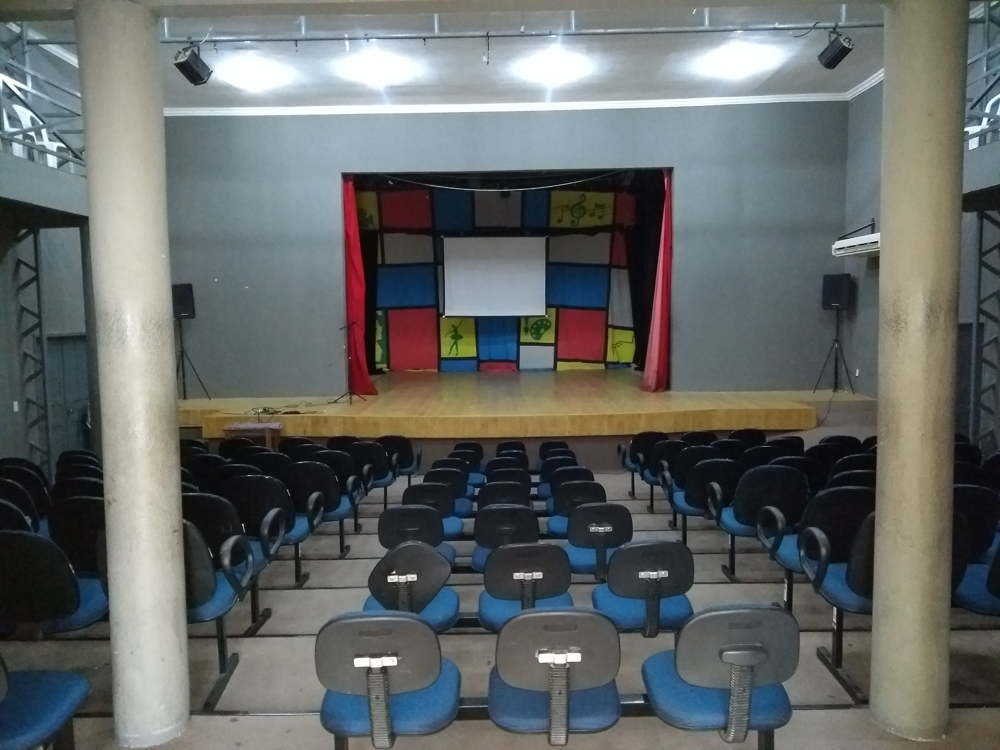

Informações técnicas sobre relevo, população, IDH etc.
| INFORMAÇÕES | |
|---|---|
| Municípios limítrofes | Aquiraz, Cascavel, Pacajus, Guaiúba e Itaitinga |
| Fundação | 6 de março de 1987 (34 anos) |
| Área total | 159,972 km² |
| Clima | Tropical quente subúmido |
| IDH | 0,679 — médio |
| PIB | R$ 1.397.774 |
| INFORMAÇÕES TERRITORIAIS | |
|---|---|
| Número de habitantes | 67.337 habitantes (IBGE/2019) |
| Superfície de Horizonte |
15.998 hectares
159,98 km² (61,77 sq mi) |
| Densidade populacional | 420,9 ha./km² |
| Altitude de Horizonte | 85 metros de altitude |
| Coordenadas geográficas decimais |
Latitude:
-4.09752
Longitude: -38.4909 |
| Coordenadas geográficas sexagesimais | Latitude: 4° 5' 51'' Sul , Longitude: 38° 29' 27'' Oeste |
| INFORMAÇÕES DO MUNICÍPIO | |
|---|---|
| Endereço da Prefeitura Municipal de Horizonte |
Horizonte
Prefeitura de Horizonte
Presidente Castelo Branco, 5100 HORIZONTE - CE, 62880-000 Brasil |
| Telefone da prefeitura |
(85) 3105-1369
Internacional: +55 85 3105-1369 |
| Fax |
(85) 3255-8317
Internacional: +55 85 3255-8317 |
| Endereço electrônico da Prefeitura |
gabinete@horizonte.ce.gov.br
|
| Site oficial do município | horizonte.ce.gov.br/ |
| INFORMAÇÕES DO ADMINISTRATIVAS | ||
|---|---|---|
| Prefeito de Horizonte | MANOEL GOMES DE FARIAS NETO | |
| Partido politico | PDT | |
| INFORMAÇÕES DE TRANSPORTE | |
|---|---|
| Aeroporto |
Aeroporto Internacional Pinto Martins
36.1 km
Aeroporto de Sobral
210.3 km
Aeroporto Dix-Sept Rosado
175.3 km
|
| INFORMAÇÕES DE DISTÂNCIA A OUTRAS CIDADES | ||
|---|---|---|
| São Paulo : 2336 km | Rio de Janeiro : 2154 km | Brasília : 1661 km |
| Salvador : 988 km | Belo Horizonte : 1847 km | Manaus : 2395 km |
| Curitiba : 2639 km | Fortaleza : 43 km mais perto | Goiânia : 1829 km |
| Belém : 1151 km | Porto Alegre : 3183 km | Guarulhos : 2314 km |
| Campinas : 2288 km | São Luís : 669 km | Recife : 595 km |
| Distância calculada em linha reta! | ||
Conheça mais sobre a história de Horizonte.
A localidade, que depois se tornou vila e, posteriormente, o município denominado Guarani, foi extinta em 1920, vindo a representar um distrito de Aquiraz. Em 1938, Guarani, que logo depois recebeu o nome de Pacajus, voltou à categoria de município, tendo seu território dividido em 4 distritos: Guarani, Currais Velho, Lagoa das Pedras e Olho d’Água do Venâncio. O último viria a se tornar Horizonte, tendo recebido essa denominação pelo fato da região ser rica em fontes hídricas, sendo o olho d’água na fazenda do Venâncio a mais conhecida.
A mudança do nome para Horizonte, sugerido pela professora Raimunda Duarte Teixeira, ocorreu através do Decreto-Lei nº 1114, de 30 de dezembro de 1943, mas até tornar-se um município livre, Horizonte teve de percorrer uma grande trajetória. O 1º movimento de emancipação ocorreu em 1963, liderado por Horácio Domingos de Sousa e Manoel Feliciano de Sousa. O Governador Virgílio Távora assinou a Lei Estadual nº 6793, emancipando Horizonte. No entanto, em 1964, um ano depois, a lei foi derrubada após o início da ditadura militar.
Vinte anos depois, com o fim da ditadura, a Sociedade dos Amigos de Horizonte – Sahori – representada por Horácio Domingos de Sousa, Francisco César de Sousa, José Evandro Nogueira e Juvenal Lamartine Azedo Lima, juntamente à população horizontina, voltaram a lutar por liberdade, realizando um plebiscito, no qual 2.273 eleitores votaram a favor da emancipação e 182 votaram em desacordo. No dia 6 de março de 1987, no Palácio da Abolição, o governador Gonzaga Mota sancionou a Lei Estadual nº 11.300, criando o município de Horizonte. Em 1º de Janeiro de 1989, a emancipação da cidade foi concretizada com a criação da Câmara Municipal e a posse do primeiro prefeito do município, Francisco César de Sousa.
Fonte: https://www.horizonte.ce.gov.br/historia/
Saiba mais sobre os melhores lugares e o que fazer em Horizonte.
Idealizado em 2013, os roteiros culturais são gratuitos e tem o objetivo de difundir a Educação Patrimonial no município de Horizonte, além de fortalecer as raízes e identidades culturais locais. Dividido por temas, os roteiros passam pelos principais pontos de história da cidade, levando informação e conhecimento a quem participa. Os interessados devem formar um grupo com, no mínimo, dez pessoas e procurar a Secretaria de Cultura.
Horizonte possui uma comunidade quilombola. Considerada uma das mais importantes partes da identidade antropológica do município, a comunidade de Alto Alegre teve seu reconhecimento formal em maio de 2005, quando foi considerada remanescente dos Quilombos pela Fundação Palmares.
O Centro Cultural Tasso Jereissati consolidou-se como um dos principais equipamentos culturais da região. Seja nos jardins, no pátio ou nas salas de aula, o espaço inspira poetas, músicos e artistas que fazem desta casa, a sua casa. O Centro oferece gratuitamente aulas de ballet, baby class (turma infantil de ballet), jazz, ritmos, dança do ventre, capoeira, técnica vocal, bateria, violão, teclado, piano, saxofone, flauta, clarinete e banda musical, além de dança contemporânea para pessoas com deficiência de todas as idades.
Fonte: https://www.horizonte.ce.gov.br/roteiro-cultural/
Veja como chegar nos melhores pontos de Horizonte